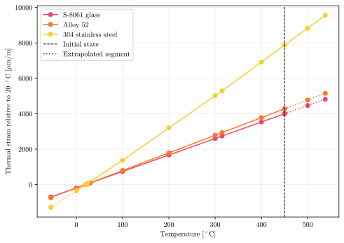
Thermal cycling of a hermetic glass-to-metal seal
Residual-stress and thermal-cycle analysis of an S-8061 glass, Alloy 52 pin, and 304L stainless-steel hermetic seal.
1 Description
1.1 Engineering problem
A hermetic glass-to-metal seal electrically isolates conductive pins while maintaining a leak-tight path through a metal header. The seal is assembled at high temperature, where the glass can flow and wet the adjoining metal surfaces. As the assembly cools, the glass, pins, and header attempt to contract by different amounts. Compatibility across the bonded interfaces converts that thermal-expansion mismatch into residual stress in the glass and elastic-plastic strain in the metals.
The residual state matters for two reasons. Tensile principal stress can initiate or grow flaws in the brittle glass, while yielding in the header or pins redistributes the stress carried by the glass. Tandon et al. showed that apparently modest changes to the metal plasticity model can materially change the predicted glass stress [1]. Later Sandia work characterized the temperature dependence, processing sensitivity, and rate dependence of the constituent materials [2], [3], [4], and assessed a related seal model against experimental measurements [5].
This example has two goals:
- reproduce the engineering flow of the published finite-element assessment using public material data; and
- provide a demanding development problem for thermomechanical, multicell immersed IGA workflows.
1.2 Geometry and components
The example STEP assembly is a substantially modified derivative of the Fischer Connectors SFE 104 A056-130 supplier model downloaded from 3D ContentCentral [6]. The citation documents the CAD model’s provenance; because the source geometry was significantly changed, the example must not be interpreted as the manufacturer’s as-supplied geometry.
NoteRequired model file
Before beginning the Abaqus/CAE workflow, download the modified STEP assembly used by this example.
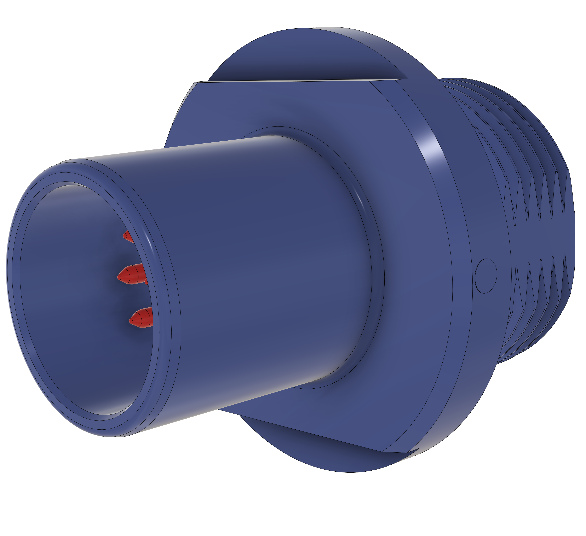
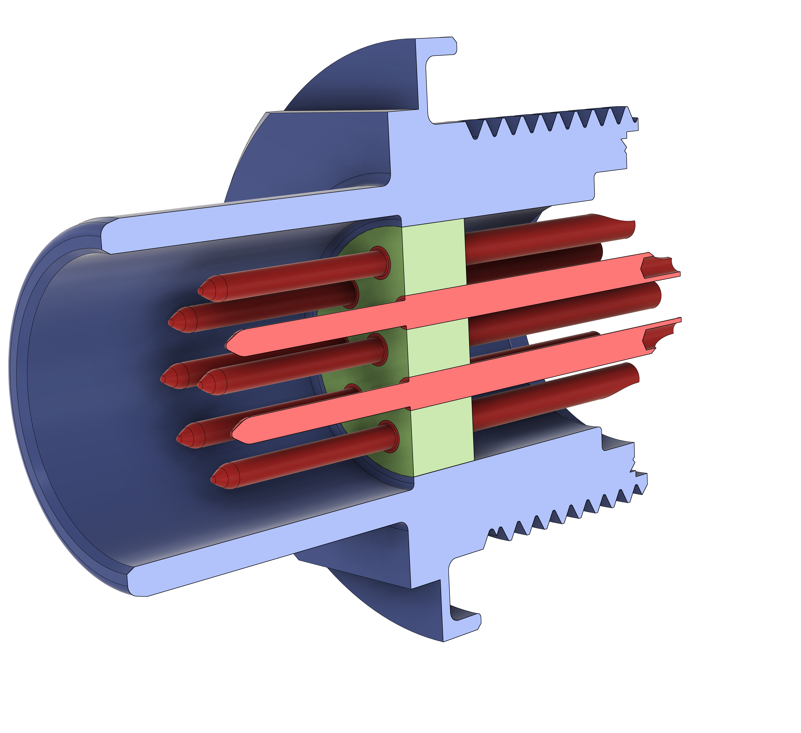
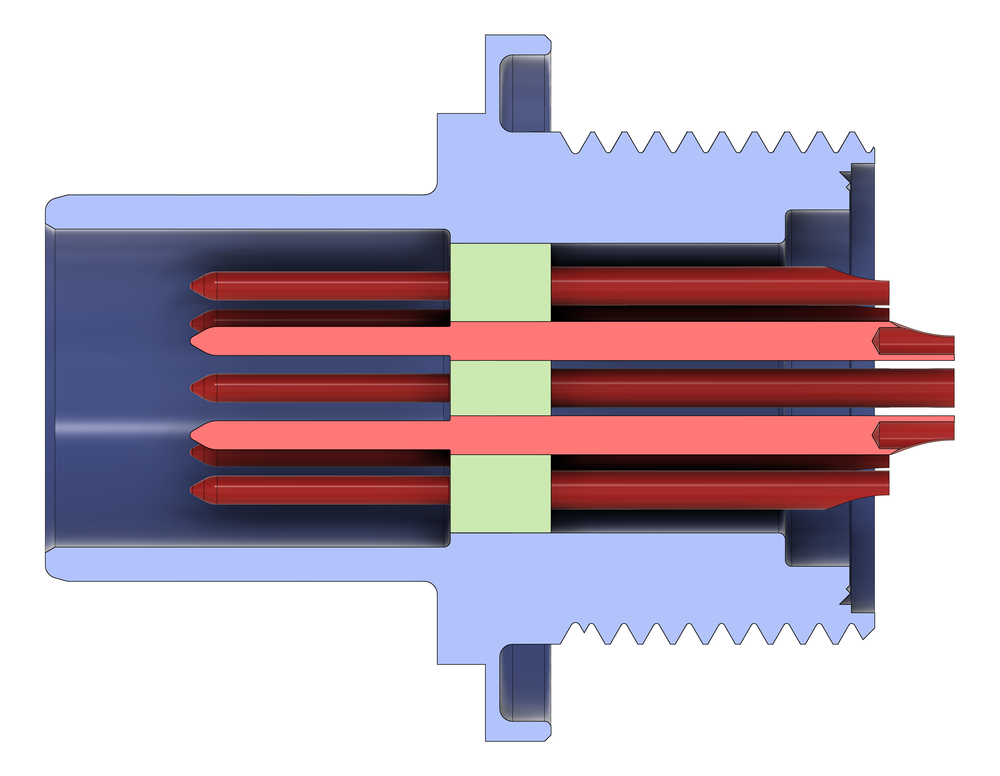
The modified STEP assembly contains 13 solid bodies. They are Boolean-merged with intersections retained, producing one deformable part with internal material boundaries:
| Component | Material |
|---|---|
| Glass seal | Schott S-8061 |
| Eleven electrical pins | Alloy 52 / UNS N14052 |
| Metal header | Seal-conditioned 304L VAR stainless steel |
Keeping a single merged part avoids artificial geometric gaps at the interfaces and permits a conforming spline field to span the shared boundaries. The initial model treats both glass-to-metal interfaces as perfectly bonded, consistent with the baseline model in the target paper [1]. Frictional separation is an important future sensitivity study rather than an assumption hidden in the baseline.
1.3 Thermal history and modeling scope
The analysis starts from a nominally stress-free state at 450 °C, near the reported S-8061 strain point. It then applies three spatially uniform temperature changes:
| State | Temperature | Purpose |
|---|---|---|
| Initial | 450 °C | Approximate the stress-free sealing state |
cool_to_room |
20 °C | Develop manufacturing residual stress |
cool_to_minus_55 |
-55 °C | Apply the cold qualification excursion |
heat_to_200 |
200 °C | Apply the hot qualification excursion |
The temperature is prescribed uniformly, so this is a stress analysis rather than a transient heat-transfer analysis. It does not represent through-thickness thermal gradients, furnace dwell times, cooling rate, glass structural relaxation, or metal viscoplasticity. Instead, the thermoelastic glass model begins at 450 °C and treats the high-temperature relaxation that created the stress-free state as already complete.
All dimensional values use the MMTS consistent unit system: millimeters, tonnes, seconds, newtons, megapascals, and degrees Celsius.
1.4 Engineering analysis approach
1.4.1 Quantities of interest
The primary result is maximum principal stress in the glass, especially near the pin and header interfaces. Supporting results are:
- equivalent plastic strain (
PEEQ) in the header and pins; - plastic strain (
PE) and logarithmic strain (LE) through the thermal cycle; - displacement (
U) of the seal and pins; and - the prescribed nodal temperature (
NT) when IGA temperature output becomes available.
Stress alone is not a deterministic glass-failure criterion. Predicting crack probability would require flaw-population statistics, a suitable Weibull or fracture-mechanics treatment, and relevant validation data [7], [8].
1.4.2 Glass failure indicator
Use the positive maximum principal stress, \(\sigma_1^+=\max(\sigma_1,0)\), as the primary screening field, not as a deterministic prediction of cracking. The recommended hierarchy is summarized in Table 1.
| Indicator or predictor | Recommended use |
|---|---|
| \(\sigma_1^+\) contour and converged local peaks | Locate tensile regions and compare model variants |
| Tensile-stress surface-area and volume distributions | Quantify how much glass is highly stressed without reducing the result to one point |
| Surface- and volume-flaw Weibull probability | Predict fast-fracture probability after calibration to the relevant S-8061 lot, surface condition, and thermal process |
| Time-dependent fracture model | Assess environmentally assisted slow crack growth when dwell time, cycling rate, and service environment matter |
| Interface fracture or cohesive model | Assess debonding and loss of hermeticity separately from bulk-glass cracking |
The Weibull calculation should use the complete multiaxial tensile stress field and distinguish surface from volume flaw populations. It also needs special care at idealized glass-to-metal corners: Sandia’s FAILPROB work identifies such interfaces as potential stress singularities and shows why a raw maximum principal stress can remain mesh dependent [8]. Until relevant S-8061 Weibull parameters and a validated singularity treatment are available, report \(\sigma_1^+\) and stressed-area or stressed-volume distributions as comparative indicators only.
1.5 Material properties
1.5.1 Data strategy and provenance
The public reports do not contain the original measured dilatometry files or the complete production BCJ/SPEC parameter decks. An exact bit-for-bit reproduction of the Sandia analyses is therefore not possible from public information. The data used here distinguish four provenance classes:
| Code | Meaning |
|---|---|
| R | Numerically reported by a source |
| D | Digitized from a published plot |
| C | Calculated or unit-converted from reported data |
| A | Analyst assumption or documented extrapolation |
The codes are appended to the entries in the baseline material table below; multiple codes indicate that a value combines more than one provenance class. The baseline is a recommended public-data model rather than a claim that one particular production lot is represented exactly.
1.5.2 Baseline material definitions
| Property | S-8061 glass | Alloy 52 pins | 304L VAR header |
|---|---|---|---|
| Density [tonne/mm³] | \(2.60\times10^{-9}\) (R/C) | \(8.30\times10^{-9}\) (R/C) | \(7.90\times10^{-9}\) (R/C) |
| Poisson’s ratio | 0.22 (R) | 0.29 (R) | 0.30 (R) |
| Elastic modulus | Temperature-dependent digitized curve (R/D/C) | 165,500 MPa (R/C) | Temperature-dependent Type 304 table (R) |
| Thermal expansion | 9.3 ppm/°C (R) | 9.95 ppm/°C (R/C/A) | Piecewise thermal-strain table (R/C/A) |
| Inelastic response | None (A) | Linear isotropic hardening (D/C) | Temperature-dependent multilinear J2 plasticity (D/A) |
The glass density and catalog expansion are from S-8061 supplier data [9]. The elastic-modulus temperature dependence is the annealed specimen curve digitized from Chambers et al. and normalized to 69 GPa at 25 °C [2]. The sharp modulus decrease near 500 °C is rate dependent and should not be interpreted as a general elastic law above the glass transition.
Alloy 52 uses the manufacturer’s 165.5 GPa modulus and 0.29 Poisson’s ratio [10]. Its 9.95 ppm/°C expansion coefficient is the midpoint of the manufacturer’s reported 30–450 °C range [11]. The baseline linear hardening definition is
\[ \sigma_y = 234.4\ \mathrm{MPa} + 1924\ \mathrm{MPa}\,\bar{\varepsilon}^{p}. \]
The initial yield stress and slope are inferred from the curve published by Tandon et al. [1]. The supplier modulus is about 20% lower than the 207 GPa used in that paper, making the pin modulus an explicit sensitivity parameter.
The header uses seal-conditioned 304L VAR stress-plastic-strain curves digitized at 20, 100, 200, 300, 400, and 500 °C [2], [3]. The complete 20 °C curve is scaled by 1.2 at -55 °C, following the low-temperature trend used by Tandon et al.; this is an assumption, not a measurement of the later 304L VAR heat. The elastic-modulus values and accumulated thermal strain use public Type 304 data [12].
1.5.3 Thermal strain
Figure 3 plots total linear thermal strain relative to 20 °C. The larger contraction of the stainless-steel header is the main source of thermal mismatch. Abaqus receives scalar expansion coefficients for S-8061 and Alloy 52, and a temperature-dependent secant-expansion table for 304L, while the analysis begins from the 450 °C initial temperature. Dotted segments mark Alloy 52 below 30 °C and above 450 °C, Type 304 below 0 °C, and S-8061 above the 450 °C limit of the baseline thermoelastic model.
1.5.4 S-8061 elastic modulus
The measured temperature trend in Figure 4 is applied as piecewise-linear isotropic elasticity with constant Poisson’s ratio. The baseline analysis does not include glass viscoelasticity or structural relaxation.
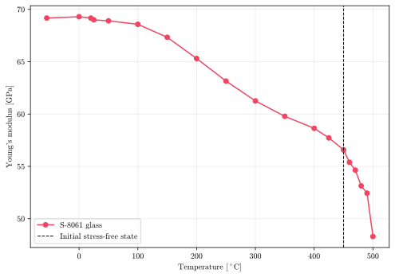
1.5.5 Metal plasticity
Figure 5 shows both sources of metal hardening data. The 304L curves are used directly as temperature-dependent multilinear plasticity. For Alloy 52, the initial example uses the simpler linear-hardening law and retains the digitized 2007 power-law curve for sensitivity studies. Each hardening table ends at its last digitized point: about 2.3% equivalent plastic strain for 304L VAR and 18% for Alloy 52. Abaqus holds the yield stress constant beyond the tabulated range, so any region that accumulates more plastic strain than this responds as perfectly plastic.
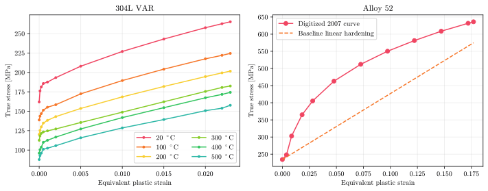
1.5.6 Download the source and engineering data
The downloadable CSV files below preserve the engineering data used to build the plots and constitutive models. They are useful for reviewing the assumptions or developing alternative material fits, but their columns are not arranged for direct pasting into every Abaqus/CAE material editor. The Property module provides the exact Abaqus column order, a rendered table for every material behavior, and a headerless tab-delimited download that can be pasted directly into the corresponding dialog. Digitized values retain the precision needed to reproduce the tables, not an implied measurement accuracy.
| Dataset | Download | Provenance and intended use |
|---|---|---|
| Recommended thermal strain | CSV | Derived from supplier and Type 304 mean-expansion data; includes documented extrapolations |
| S-8061 modulus | CSV | Digitized normalized annealed-glass curve from [2] |
| 304L VAR multilinear plasticity | CSV | Digitized seal-conditioned curves from [2], [3] |
| Alloy 52 power-law curve | CSV | Digitized legacy sensitivity curve from [1] |
2 Workflow in Abaqus/CAE
This section follows the same Abaqus/CAE module sequence as the introductory thin-plate example, but assumes that the reader already knows how to create materials, sets, steps, and jobs. The tables provide the exact object names and settings used by the completed baseline analysis.
The generated journal replays the complete Abaqus/CAE model-construction workflow, including the material tables described above.
Download the baseline Abaqus/CAE journal
2.1 Model definition
Begin with a new model database and create the model in Table 2. The description records the unit convention for anyone who opens the model later; Abaqus does not perform unit conversion or unit checking.
| Setting | Value |
|---|---|
| Name | Glass-to-Metal-Seal |
| Description | MMTS units: mm, N, s, tonne, MPa, deg C |
| Do not use parts and assemblies in input files | On |
2.2 Part module: import the geometry
2.2.1 Import the STEP assembly
Import the downloaded glass_to_metal_seal_connector.stp using Table 3. With Combine into a single part off, the import creates one deformable part per solid body — 13 parts in total.
| Setting | Value |
|---|---|
| Modeling space | 3D |
| Type | Deformable |
| Base feature | Solid |
| Combine into a single part | Off |
| Scale from file | Off |
2.3 Assembly module: merge the solid bodies
Switch to the Assembly module for the Boolean merge. The imported solid bodies first need to be instanced because Merge/Cut Instances operates on assembly instances and creates a new part from the result.
2.3.1 Merge the solid bodies
Instance the 13 imported parts, then combine them into a single part with Merge/Cut Instances using Table 4. Keeping the intersecting boundaries is essential: those faces separate the glass, pin, and header cells after the merge and allow each region to receive its own material.
| Setting | Value |
|---|---|
| Name | g2m_seal_merged |
| Instances | All 13 dependent source instances |
| Original instances | Suppress |
| Keep intersecting boundaries | On |
| Domain | Geometry |
2.4 Part module: create the component sets
Return to the Part module and make g2m_seal_merged current. The sets created here belong to the merged part, so they remain available on its instance when the assembly is regenerated.
2.4.1 Create the component sets
Confirm that the merged part contains 13 cells before defining regions. If the STEP model is re-exported or repaired, identify each component from the geometry rather than relying on stored topology indices.
Create the four part sets defined in Table 5, Table 6, Table 7, and Table 8.
The internal faces must remain present after the Boolean merge. They identify the material interfaces and preserve the separate cell assignments within the single part.
Temporarily hide the header set to inspect the two enclosed component families, as shown in Figure 6. This image is printed directly from an Abaqus/CAE viewport rather than reused from the CAD overview.
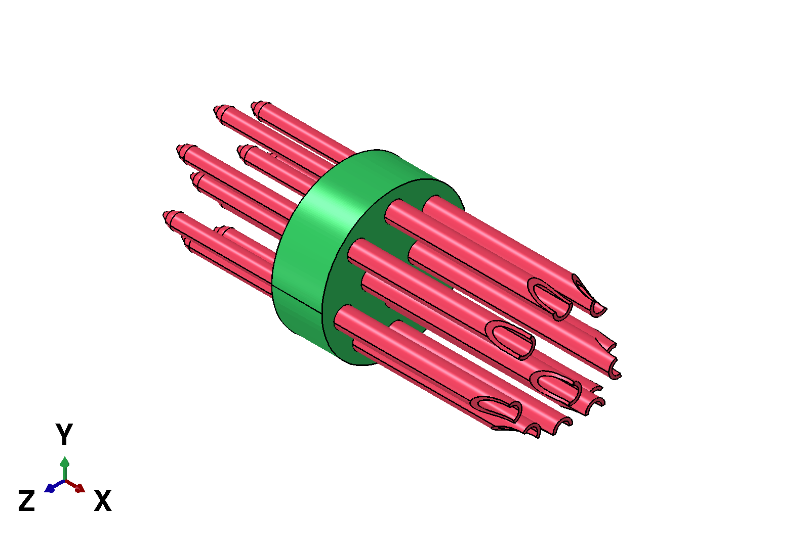
2.5 Property module
The three materials have very different constitutive descriptions, so create and check them one at a time. The multi-row tables in this section reproduce the columns and row order expected by the corresponding Abaqus/CAE table editor. Each Download data link provides the same numeric rows in a headerless, tab-delimited file: open the file, copy all of its contents, select the upper-left data cell in Abaqus/CAE, and paste. Enable Use temperature-dependent data before pasting a table that includes a temperature column.
2.5.1 Materials
2.5.1.1 Create the S-8061 glass material
Create a material named S8061_GLASS, then add density, isotropic elasticity, and isotropic thermal expansion as summarized in Table 9. The glass is elastic in this baseline model; its stiffness varies with temperature, but its expansion coefficient is constant and no plasticity or viscoelastic relaxation is assigned.
| Setting | Value |
|---|---|
| Name | S8061_GLASS |
| General > Density | \(2.60\times10^{-9}\) tonne/mm³ |
| Mechanical > Elasticity > Elastic | Isotropic; temperature-dependent; see Table 10 |
| Mechanical > Expansion | Isotropic; \(9.30\times10^{-6}\)/°C; zero temperature 20 °C |
For Mechanical > Elasticity > Elastic, choose isotropic elasticity, enable temperature-dependent data, and paste Table 10.
| Young’s modulus [MPa] | Poisson’s ratio | Temperature [°C] |
|---|---|---|
| 69166 | 0.22 | -55 |
| 69297 | 0.22 | 0 |
| 69166 | 0.22 | 20 |
| 69000 | 0.22 | 25 |
| 68903 | 0.22 | 50 |
| 68572 | 0.22 | 100 |
| 67330 | 0.22 | 150 |
| 65302 | 0.22 | 200 |
| 63149 | 0.22 | 250 |
| 61251 | 0.22 | 300 |
| 59782 | 0.22 | 350 |
| 58636 | 0.22 | 400 |
| 57719 | 0.22 | 425 |
| 56580 | 0.22 | 450 |
| 55393 | 0.22 | 460 |
| 54641 | 0.22 | 470 |
| 53137 | 0.22 | 480 |
| 52440 | 0.22 | 490 |
| 48300 | 0.22 | 500 |
Download data (headerless, tab-delimited)
For Mechanical > Expansion, choose isotropic expansion, enter \(9.30\times10^{-6}\)/°C, leave temperature dependence off, and enter 20 °C as the zero temperature.
2.5.1.2 Create the Alloy 52 pin material
Create ALLOY52 using Table 11. Unlike the glass, this material has constant elastic and expansion properties in the baseline model and a two-point isotropic-hardening law.
| Setting | Value |
|---|---|
| Name | ALLOY52 |
| General > Density | \(8.30\times10^{-9}\) tonne/mm³ |
| Mechanical > Elasticity > Elastic | Isotropic; \(E=165{,}500\) MPa; \(\nu=0.29\) |
| Mechanical > Expansion | Isotropic; \(9.95\times10^{-6}\)/°C; zero temperature 20 °C |
| Mechanical > Plasticity > Plastic | Isotropic hardening; see Table 12 |
Enter the scalar density, elastic, and expansion values directly from Table 11. Leave temperature dependence off for both elasticity and expansion, and enter 20 °C as the expansion zero temperature.
Add Mechanical > Plasticity > Plastic, leave temperature dependence off, and paste the true yield stress and equivalent plastic strain pairs from Table 12.
| Yield stress [MPa] | Plastic strain |
|---|---|
| 234.4 | 0 |
| 580.72 | 0.18 |
Download data (headerless, tab-delimited)
2.5.1.3 Create the 304L VAR header material
Create SS304L_VAR using Table 13. All three mechanical tables are temperature dependent, so confirm the temperature column is visible before pasting the elastic, expansion, or plastic data.
| Setting | Value |
|---|---|
| Name | SS304L_VAR |
| General > Density | \(7.90\times10^{-9}\) tonne/mm³ |
| Mechanical > Elasticity > Elastic | Isotropic; temperature-dependent; see Table 14 |
| Mechanical > Expansion | Isotropic; temperature-dependent; zero temperature 20 °C; see Table 15 |
| Mechanical > Plasticity > Plastic | Isotropic hardening; temperature-dependent; see Table 16 |
For Mechanical > Elasticity > Elastic, choose isotropic elasticity, enable temperature-dependent data, and paste Table 14.
| Young’s modulus [MPa] | Poisson’s ratio | Temperature [°C] |
|---|---|---|
| 193000 | 0.3 | 27 |
| 192000 | 0.3 | 93 |
| 187000 | 0.3 | 149 |
| 183000 | 0.3 | 204 |
| 179000 | 0.3 | 260 |
| 177000 | 0.3 | 316 |
| 170000 | 0.3 | 371 |
| 166000 | 0.3 | 427 |
| 160000 | 0.3 | 482 |
| 155000 | 0.3 | 538 |
Download data (headerless, tab-delimited)
For Mechanical > Expansion, choose isotropic expansion, enter 20 °C as the zero temperature, enable temperature-dependent data, and paste Table 15.
| Expansion coefficient [1/°C] | Temperature [°C] |
|---|---|
| 1.72e-05 | -55 |
| 1.72e-05 | 0 |
| 1.72e-05 | 20 |
| 1.72e-05 | 25 |
| 1.72e-05 | 100 |
| 1.77697666667e-05 | 200 |
| 1.79325571429e-05 | 300 |
| 1.79474576271e-05 | 315 |
| 1.82066684211e-05 | 400 |
| 1.83112744186e-05 | 450 |
| 1.83940854167e-05 | 500 |
| 1.84463320463e-05 | 538 |
Download data (headerless, tab-delimited)
For Mechanical > Plasticity > Plastic, select isotropic hardening, enable temperature-dependent data, and paste Table 16. Keep the rows grouped by temperature and in increasing plastic-strain order within each group.
| Yield stress [MPa] | Plastic strain | Temperature [°C] |
|---|---|---|
| 194.4 | 0 | -55 |
| 211.44 | 0.0001 | -55 |
| 217.56 | 0.00025 | -55 |
| 222.84 | 0.0005 | -55 |
| 225.12 | 0.001 | -55 |
| 231.96 | 0.002 | -55 |
| 249.6 | 0.005 | -55 |
| 272.4 | 0.01 | -55 |
| 291.6 | 0.015 | -55 |
| 309.12 | 0.02 | -55 |
| 315.24 | 0.022 | -55 |
| 318.24 | 0.023 | -55 |
| 162 | 0 | 20 |
| 176.2 | 0.0001 | 20 |
| 181.3 | 0.00025 | 20 |
| 185.7 | 0.0005 | 20 |
| 187.6 | 0.001 | 20 |
| 193.3 | 0.002 | 20 |
| 208 | 0.005 | 20 |
| 227 | 0.01 | 20 |
| 243 | 0.015 | 20 |
| 257.6 | 0.02 | 20 |
| 262.7 | 0.022 | 20 |
| 265.2 | 0.023 | 20 |
| 138.7 | 0 | 100 |
| 143.7 | 0.0001 | 100 |
| 146.9 | 0.00025 | 100 |
| 151.4 | 0.0005 | 100 |
| 155.2 | 0.001 | 100 |
| 158.4 | 0.002 | 100 |
| 172.4 | 0.005 | 100 |
| 189.5 | 0.01 | 100 |
| 204.2 | 0.015 | 100 |
| 217.5 | 0.02 | 100 |
| 222 | 0.022 | 100 |
| 224.5 | 0.023 | 100 |
| 120.2 | 0 | 200 |
| 125.3 | 0.0001 | 200 |
| 129.8 | 0.00025 | 200 |
| 134.8 | 0.0005 | 200 |
| 138.3 | 0.001 | 200 |
| 143.1 | 0.002 | 200 |
| 153.6 | 0.005 | 200 |
| 168.5 | 0.01 | 200 |
| 181.9 | 0.015 | 200 |
| 194.6 | 0.02 | 200 |
| 199.4 | 0.022 | 200 |
| 201.6 | 0.023 | 200 |
| 112.6 | 0 | 300 |
| 118.3 | 0.0001 | 300 |
| 121.5 | 0.00025 | 300 |
| 123.4 | 0.0005 | 300 |
| 124.7 | 0.001 | 300 |
| 127.2 | 0.002 | 300 |
| 135.5 | 0.005 | 300 |
| 148.8 | 0.01 | 300 |
| 162.2 | 0.015 | 300 |
| 175.5 | 0.02 | 300 |
| 180.6 | 0.022 | 300 |
| 182.5 | 0.023 | 300 |
| 96 | 0 | 400 |
| 100.5 | 0.0001 | 400 |
| 103.7 | 0.00025 | 400 |
| 110 | 0.0005 | 400 |
| 112.6 | 0.001 | 400 |
| 116.7 | 0.002 | 400 |
| 127.2 | 0.005 | 400 |
| 141.8 | 0.01 | 400 |
| 154.6 | 0.015 | 400 |
| 167.3 | 0.02 | 400 |
| 171.7 | 0.022 | 400 |
| 174.3 | 0.023 | 400 |
| 87.8 | 0 | 500 |
| 92.9 | 0.0001 | 500 |
| 96 | 0.00025 | 500 |
| 101.1 | 0.0005 | 500 |
| 102.4 | 0.001 | 500 |
| 105.6 | 0.002 | 500 |
| 115.8 | 0.005 | 500 |
| 128.5 | 0.01 | 500 |
| 139.3 | 0.015 | 500 |
| 150.7 | 0.02 | 500 |
| 153.9 | 0.022 | 500 |
| 157.7 | 0.023 | 500 |
Download data (headerless, tab-delimited)
2.5.2 Sections
With all three materials complete, create one homogeneous solid section for each component family. The section names make the later assignments easy to check in the Model Tree.
2.5.2.1 Create the S-8061 glass section
Create the homogeneous solid section in Table 17 and associate it with S8061_GLASS.
| Setting | Value |
|---|---|
| Name | SECTION_S8061 |
| Category | Solid |
| Type | Homogeneous |
| Material | S8061_GLASS |
2.5.2.2 Create the Alloy 52 pin section
Create the homogeneous solid section in Table 18 and associate it with ALLOY52.
| Setting | Value |
|---|---|
| Name | SECTION_ALLOY52 |
| Category | Solid |
| Type | Homogeneous |
| Material | ALLOY52 |
2.5.2.3 Create the 304L VAR header section
Create the homogeneous solid section in Table 19 and associate it with SS304L_VAR.
| Setting | Value |
|---|---|
| Name | SECTION_SS304L |
| Category | Solid |
| Type | Homogeneous |
| Material | SS304L_VAR |
2.5.3 Section assignments
Assign the sections to the part sets created earlier. After all three assignments, color-coding the viewport by material is a quick way to confirm that the glass, pins, and header are distinct and that no cell remains unassigned.
2.5.3.1 Assign the S-8061 glass section
Select the glass region shown in Figure 1 and use Table 20.
| Setting | Value |
|---|---|
| Region | SEAL_S8061 |
| Section | SECTION_S8061 |
2.5.3.2 Assign the Alloy 52 pin section
Select all eleven pins shown in Figure 1 and use Table 21.
| Setting | Value |
|---|---|
| Region | PINS_ALLOY52 |
| Section | SECTION_ALLOY52 |
2.5.3.3 Assign the 304L VAR header section
Select the header shown in Figure 1 and use Table 22.
| Setting | Value |
|---|---|
| Region | HEADER_SS304L |
| Section | SECTION_SS304L |
Color the viewport by Section to check the completed assignments. Figure 7 shows the resulting isometric Abaqus/CAE viewport; the 304L VAR header is purple and the Alloy 52 pins are carnation. The glass is enclosed by the header in this view, so hide the header temporarily and confirm the green seal region shown in Figure 6.
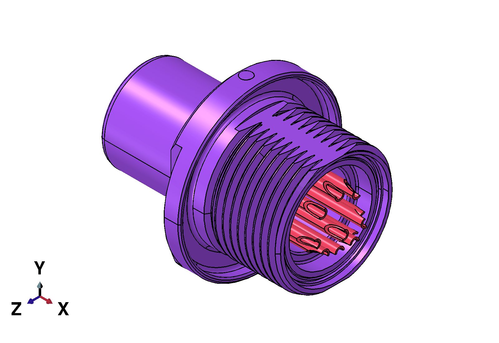
All three expansion definitions use 20 °C as their reference temperature; only the 304L definition is temperature dependent. The initial temperature condition introduced later establishes the 450 °C stress-free starting state from which Abaqus computes the subsequent thermal strains.
2.6 Assembly module: create the analysis regions
Return to the Assembly module to define the assembly-level regions used by the temperature condition and distributing constraint.
2.6.1 Create the complete assembly set
Regenerate the assembly and confirm that the merged instance is named g2m_seal_merged-1. Create the complete-cell set in Table 23. This set will be used to apply one uniform temperature field to the entire connector.
| Setting | Value |
|---|---|
| Name | WHOLE_ASSEMBLY |
| Region | All cells of g2m_seal_merged-1 |
2.6.2 Create the coupling surface and control point
Use a distributing constraint instead of fixing every point on the mounting surface. A fixed control point carries the resultant translational and rotational restraint, while uniform distributing weights transfer that restraint over the annular mounting surface. Individual points on the surface can still deform locally, which reduces the artificial stress and plastic strain produced by a face-wide pinned condition.
2.6.2.1 Create the coupling surface
Create the mounting surface in Table 24. Coloring the assembly by Surface provides a useful check that only the planar mounting annulus has been selected, as shown in Figure 8.
| Setting | Value |
|---|---|
| Name | COUPLED_FACE_SURFACE |
| Region | Planar annular mounting surface at the minimum-\(x\) end of the header |
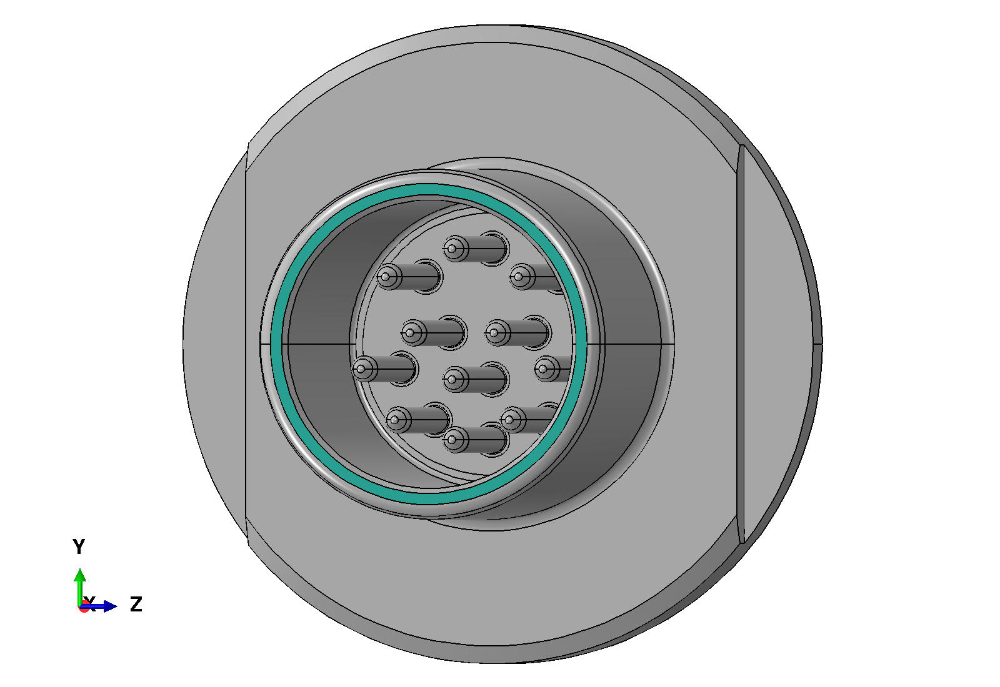
COUPLED_FACE_SURFACE highlighted in teal on the minimum-\(x\) mounting annulus.
2.6.2.2 Create the coupling control point
Create a reference point at the centroid of COUPLED_FACE_SURFACE, then place it in the set defined by Table 25. The yellow RP-1 marker in Figure 9 shows the created reference point; the set name used by the remaining workflow is COUPLING_CONTROL_POINT.
| Setting | Value |
|---|---|
| Name | COUPLING_CONTROL_POINT |
| Region | Reference point at the centroid of COUPLED_FACE_SURFACE |
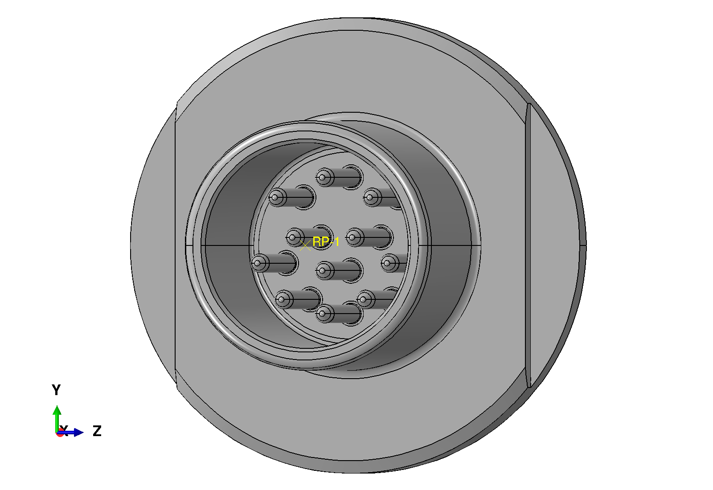
The surface and control-point set will be used to create the distributing constraint in the Interaction module.
2.7 Step module
Create the three sequential Static, General step objects in Table 26, Table 27, and Table 28. Each step uses automatic incrementation and the same numerical controls, while the Load module supplies the temperature reached at the end of the step.
2.7.1 Cool from the sealing state to room temperature
Create cool_to_room after the Initial step using Table 26. This is the manufacturing cooldown that develops the initial residual-stress state.
| Setting | Value |
|---|---|
| Name | cool_to_room |
| Previous step | Initial |
| Time period | 1.0 |
| Nlgeom | On |
| Initial increment | 0.01 |
| Minimum increment | \(10^{-6}\) |
| Maximum increment | 0.1 |
| Maximum increments | 100 |
| Equation solver | Direct |
| Matrix storage | Unsymmetric |
2.7.2 Apply the cold qualification excursion
Create cool_to_minus_55 after cool_to_room using Table 27. The material state from the room-temperature cooldown carries forward automatically.
| Setting | Value |
|---|---|
| Name | cool_to_minus_55 |
| Previous step | cool_to_room |
| Time period | 1.0 |
| Nlgeom | On |
| Initial increment | 0.01 |
| Minimum increment | \(10^{-6}\) |
| Maximum increment | 0.1 |
| Maximum increments | 100 |
| Equation solver | Direct |
| Matrix storage | Unsymmetric |
2.7.3 Apply the hot qualification excursion
Create heat_to_200 after cool_to_minus_55 using Table 28. This final step heats the already cooled assembly, so any plastic strain accumulated in either metal remains part of the starting state.
| Setting | Value |
|---|---|
| Name | heat_to_200 |
| Previous step | cool_to_minus_55 |
| Time period | 1.0 |
| Nlgeom | On |
| Initial increment | 0.01 |
| Minimum increment | \(10^{-6}\) |
| Maximum increment | 0.1 |
| Maximum increments | 100 |
| Equation solver | Direct |
| Matrix storage | Unsymmetric |
Each step uses a time period of 1.0. Time is a load-proportional path parameter in this prescribed-temperature, rate-independent model; it does not represent the physical duration of the thermal cycle. The 0.1 maximum increment limits each accepted temperature change to one tenth of a step.
Unsymmetric storage is part of the baseline numerical definition: symmetric storage produced convergence difficulties during development, while the unsymmetric baseline completed the full thermal history without cutbacks.
2.7.4 Request field output
Set the field-output variables to LE, NT, PE, PEEQ, S, and U, at averaged nodal position and every increment, as summarized in Table 29. Until IGA NT extraction is implemented, temperature output for IGA regions will be skipped with a warning; the remaining requested fields continue through translation.
| Setting | Value |
|---|---|
| Name | F-Output-1 |
| Variables | LE, NT, PE, PEEQ, S, and U |
| Position | Averaged at nodes |
| Frequency | Every increment |
2.8 Interaction module
2.8.1 Create the distributing constraint
Create the coupling constraint in the Interaction module using Table 30. This is the baseline model’s one Interaction-module object. The continuum rotational formulation is used for this solid mounting surface, and all six coupling degrees of freedom remain active. Use the surface and control-point set created in the Assembly module as the coupling surface and control point, respectively.
| Setting | Value |
|---|---|
| Name | DISTRIBUTED_COUPLING |
| Coupling type | Distributing |
| Control point | COUPLING_CONTROL_POINT |
| Surface | COUPLED_FACE_SURFACE |
| Influence radius | Whole surface |
| Weighting method | Uniform |
| Rotational coupling type | Continuum |
| \(U_1\), \(U_2\), and \(U_3\) | On |
| \(UR_1\), \(UR_2\), and \(UR_3\) | On |
Turn on the constraint symbols and confirm that the distributing lines connect the control point to the complete mounting annulus, as shown in Figure 10.
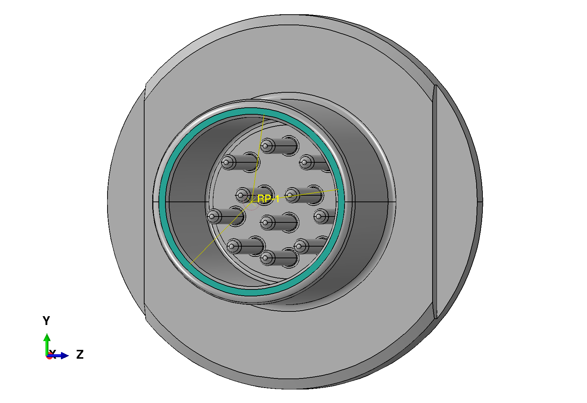
DISTRIBUTED_COUPLING between the control point and the teal mounting surface.
After creating the constraint, restrain its control point in the Load module.
2.8.2 Glass-to-metal interfaces
Do not create a separate contact or interface object for the glass-to-metal boundaries in the baseline model. The merged multicell part uses a shared spline field across its retained internal boundaries, so displacement compatibility is inherent in the discretization, just as it is across material boundaries in a contiguous finite-element mesh. The glass-to-metal interfaces are therefore perfectly bonded without an Abaqus interaction definition.
This assumption is appropriate for comparison with the target paper, but it is not universal. A model that permits separation or sliding would replace the shared-interface treatment with suitable contact or interface objects. Jamison et al. considered frictional contact with a coefficient of 0.3 for a related 304L VAR/S-8061 seal [5]; see Section 3.2 for the corresponding sensitivity study.
2.9 Load module
2.9.1 Restrain the coupling control point
Apply the boundary condition in Table 31 to the control point in the Initial step. Because the surface motion is transferred through the distributing constraint, no face-wide displacement boundary condition is needed. This boundary condition restrains the control point used by DISTRIBUTED_COUPLING; the distributing constraint transfers that restraint to the annular mounting surface.
| Setting | Value |
|---|---|
| Name | COUPLING_CONTROL_POINT_BC |
| Step | Initial |
| Category | Mechanical |
| Type | Encastre |
| Region | COUPLING_CONTROL_POINT |
With the Initial step active, turn on the boundary-condition symbols and confirm that the blue encastre glyphs surround the coupling control point, as shown in Figure 11.
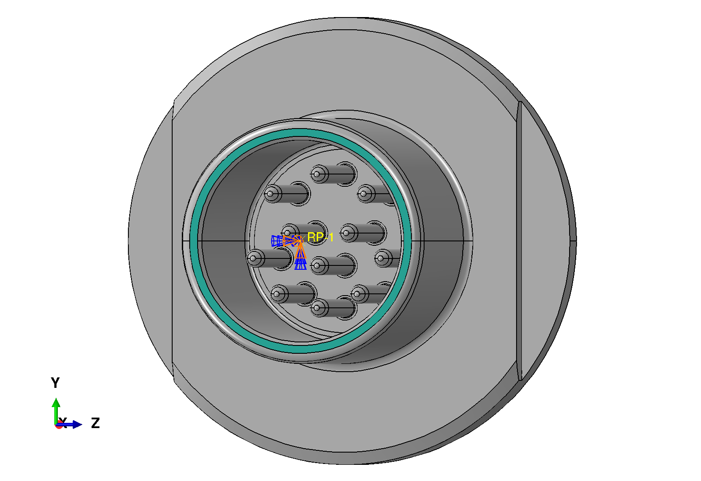
COUPLING_CONTROL_POINT_BC applied to the coupling control point.
2.9.2 Prescribe the thermal history
Create the spatially uniform temperature predefined field in Table 32.
| Setting | Value |
|---|---|
| Name | uniform_temperature |
| Step | Initial |
| Category | Other |
| Type | Temperature |
| Region | WHOLE_ASSEMBLY |
| Distribution | Uniform |
| Cross-section distribution | Constant through thickness |
| Magnitude in Initial | 450 °C |
Magnitude in cool_to_room |
20 °C |
Magnitude in cool_to_minus_55 |
-55 °C |
Magnitude in heat_to_200 |
200 °C |
Abaqus ramps each changed predefined-field value through its step. Do not add a heat-transfer step, film condition, or conductivity unless the problem is being extended to solve the temperature field.
2.10 Mesh module
Create one Immersed Rectilinear Coreform IGA mesh on g2m_seal_merged-1 using Table 33.
| Setting | Value |
|---|---|
| Instance | g2m_seal_merged-1 |
| Mesh Type | Immersed Rectilinear |
| Orientation | Axis-Aligned |
| Element Size — X | 0.5 mm |
| Element Size — Y | 0.5 mm |
| Element Size — Z | 0.5 mm |
| Padding — Mode | Default |
| Degree | 2 |
| Continuity Mode | Smooth |
| Incompressibility | Off |
| Boundary Condition Enforcement — Setting | Medium |
| Small Cell Volume Ratio | 0.1 |
Inspect the background grid around the thin glass and pin features before solving. A 0.5 mm mesh is an initial development discretization, not a mesh-converged recommendation. Refine the model until the glass stress and metal PEEQ quantities of interest are stable.
2.11 Job module
Create and submit the Coreform IGA for Abaqus job using Table 34.
| Setting | Value |
|---|---|
| Name | glass_to_metal_seal |
| Model | Glass-to-Metal-Seal |
| SIM Unit Licensing | Default |
| Run Mode | Background |
| Coreform IGA Mesh executable | Executable for the local Coreform installation |
| Scratch directory | Blank |
| Number of CPUs: Abaqus | 16 |
| Number of CPUs: IGA | 16 |
The baseline performance reported in the Discussion was measured with these 16-CPU settings; adjust both counts to the local machine.
Submit the job through the Coreform job manager. Submission generates the IGA mesh, translates the model for Abaqus, and then runs Abaqus/Standard. Before interpreting results, review the translated model to confirm that all three material sections and their temperature-dependent tables are present, the distributed coupling and control-point boundary condition are retained, and the temperature field covers the complete assembly. The unsupported IGA NT extractor should issue a warning without preventing the remaining output variables from being written.
2.12 Visualization module
2.12.1 Open and configure the output database
Open glass_to_metal_seal_iga.odb in the Visualization module and review each thermal state separately. The native IGA output database can be explored with the familiar Abaqus/CAE field-output, display-group, contour, and view-cut tools. Begin with the viewport settings in Table 35 so that the plotted deformation remains physical and the long connector is easy to read.
| Setting | Value |
|---|---|
| Plot state | Contours on deformed shape |
| Deformation scale factor | Uniform, 1.0 |
| Visible edges | None |
| Projection | Parallel |
The result views in Table 36 provide a useful first pass through the analysis.
| Region or display group | Field and invariant | Purpose |
|---|---|---|
| S-8061 glass | Maximum principal S |
Screen tensile glass stress |
| 304L VAR header | Mises S and PEEQ |
Assess header yielding and redistribution |
| Alloy 52 pins | Mises S and PEEQ |
Assess pin yielding and redistribution |
| Whole model | Magnitude of U and deformed shape |
Check rigid-body motion and global deformation |
2.12.2 Plot tensile stress in the glass
Choose Tools > Display Group > Create, select Part instances, and retain only the S-8061 glass region using Table 37. The IGA output database contains one instance for each material cell, so confirm the selected region against Figure 1 and Figure 2 before plotting the field.
| Setting | Value |
|---|---|
| Name | GLASS_ONLY |
| Item | Part instances |
| Region | S-8061 glass seal |
Open Result > Field Output and choose the stress invariant in Table 38. Maximum principal stress is the appropriate first screening field because glass fracture initiates in tension; compressive values are not interpreted as tensile failure demand.
| Setting | Value |
|---|---|
| Primary variable | S |
| Position | Element centroid |
| Refinement | Invariant |
| Invariant | Max. Principal |
In Options > Contour, specify the common limits in Table 39. Using the same limits at every thermal endpoint makes changes in the stress pattern visible without rescaling the legend from one frame to the next.
| Setting | Value |
|---|---|
| Minimum | 0 MPa |
| Maximum | 450 MPa |
| Number of intervals | 9 |
Open Result > Options, select the Computation tab, and retain the averaging settings in Table 40 so the viewport and legend state the threshold explicitly.
| Setting | Value |
|---|---|
| Compute averages | On |
| Averaging threshold | 75% |
Use Result > Step/Frame to move among the last frames listed in Table 41.
| Thermal state | Step and frame |
|---|---|
| Room-temperature state | Last frame of cool_to_room |
| Cold qualification state | Last frame of cool_to_minus_55 |
| Hot qualification state | Last frame of heat_to_200 |
Figure 12 shows the resulting Abaqus/CAE viewports. All panels use a 0–450 MPa tensile-screening scale; values at or below zero appear in the below-limit color. This is the \(\sigma_1^+\) screening field recommended in Table 1, but the local peaks still require the convergence and singularity checks discussed there.
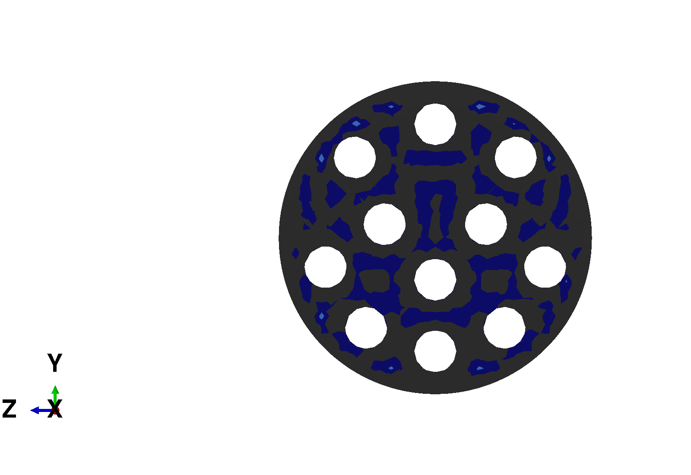
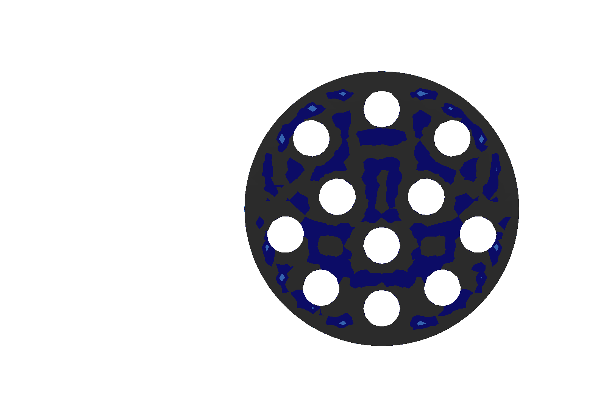
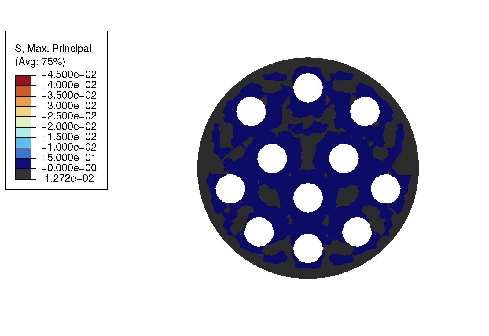
2.12.3 Inspect internal stress with a view cut
Return to the display group containing the complete model, then choose Tools > View Cut > Create and define the longitudinal plane in Table 42. Choose the standard Top view after activating the cut so that the camera looks normal to the cut plane.
| Setting | Value |
|---|---|
| Name | Connector centerline |
| Shape | Plane |
| Origin | (0, 0, 0) mm |
| Normal | Global \(y\): (0, 1, 0) |
| Show model above cut | Off |
| Show model on cut | On |
| Show model below cut | On |
Select the last frame of cool_to_minus_55, plot maximum principal stress for the complete model, and apply Table 43. This signed range helps distinguish tensile and compressive regions across the bonded assembly.
| Setting | Value |
|---|---|
| Primary variable | S |
| Position | Element centroid |
| Refinement | Invariant, Max. Principal |
| Minimum | -650 MPa |
| Maximum | 650 MPa |
| Number of intervals | 9 |
For the second view, create the metal-only display group in Table 44 and change the stress invariant to Mises using Table 45.
| Setting | Value |
|---|---|
| Name | METALS_ONLY |
| Item | Part instances |
| Region | 304L VAR header and all Alloy 52 pins |
| Setting | Value |
|---|---|
| Primary variable | S |
| Position | Element centroid |
| Refinement | Invariant, Mises |
| Minimum | 0 MPa |
| Maximum | 600 MPa |
| Number of intervals | 9 |
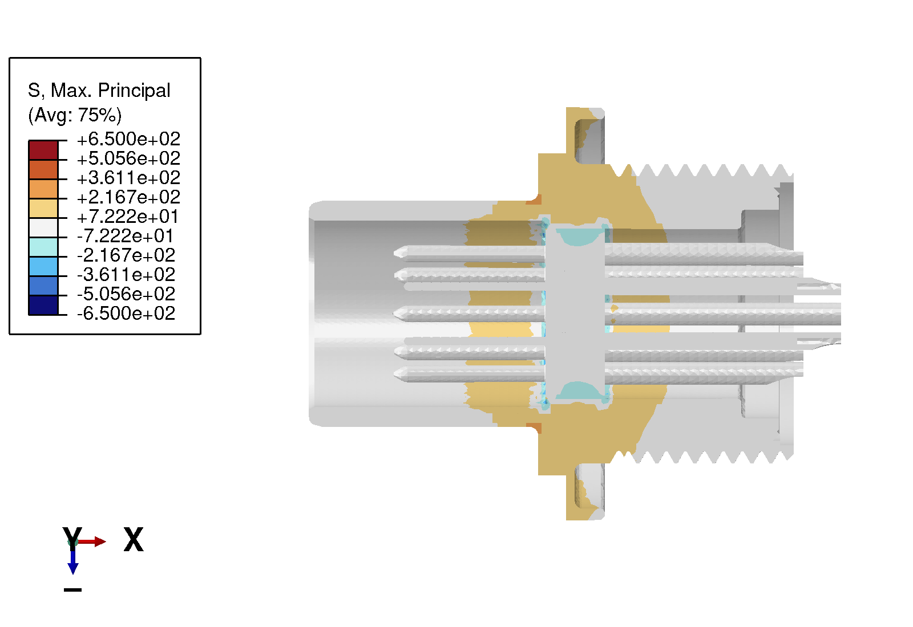
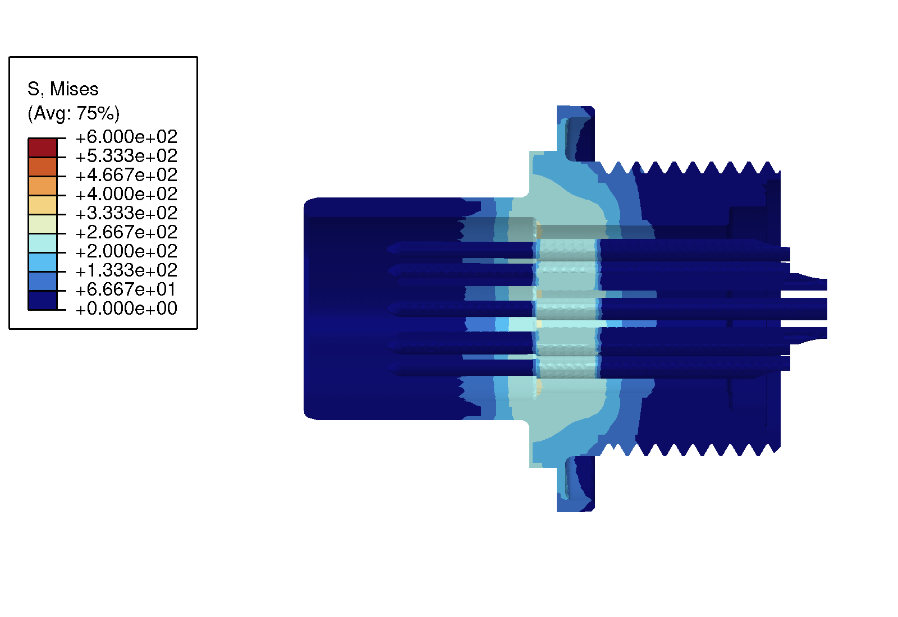
The displayed ranges are intentionally limited so isolated support and interface peaks do not flatten the rest of the contour; the endpoint colors include values outside the displayed range. Use additional view cuts and material display groups to inspect the glass-to-pin and glass-to-header interfaces. Do not use a single global stress maximum as the only convergence measure: a local support artifact or boundary-tessellation feature can dominate it.
2.12.4 Thermomechanical response
For each completed run, summarize the end of all three temperature steps in one table using the quantities in Table 46.
| Quantity | Region | Reporting guidance |
|---|---|---|
Maximum principal S |
S-8061 glass | Report value and location |
PEEQ |
304L VAR header | Report the maximum and its relation to the support |
PEEQ |
Alloy 52 pins | Report the maximum and affected pins |
| Interface stress | Glass-to-pin and glass-to-header paths | Sample away from the support and geometric corners |
Magnitude of U |
Whole model | Report the maximum as a rigid-body-motion check |
Pair the summary with material-filtered contour plots and section cuts through the most highly stressed pin and glass-to-header region. Report isolated global maxima separately from interface-path or small-volume statistics: a tessellation feature, material corner, or support-adjacent point can otherwise obscure the response of the seal itself.
The hot state must be interpreted as the continuation of the preceding cold excursion. Its stress and plastic strain therefore depend on the complete load history, not only on the final temperature of 200 °C.
Interpret the response in terms of thermal-expansion mismatch, metal yielding, and load redistribution between the header, glass, and pins. Stress or plasticity confined to the coupled mounting surface is more likely to reflect the support idealization than seal behavior, whereas repeatable peaks at the glass-to-metal interfaces warrant closer study.
The baseline remains limited by its assumed stress-free temperature, perfectly bonded interfaces, spatially uniform temperature, simplified Alloy 52 hardening, and omission of glass relaxation below the sealing state. Mesh, boundary tessellation, and penalty choices can also affect local extrema. These limitations should accompany any comparison with the published Sandia models or experimental measurements.
3 Discussion
3.1 Results
This section describes computational behavior. Engineering quantities used to assess the seal are discussed in the Visualization module.
3.1.1 Computational performance
Problem size and performance are measured from the baseline run. The Abaqus/Standard row uses the solver’s detailed performance summary.
| Metric | Value |
|---|---|
| Background elements | \(146{,}461\) |
| Active elements | \(32{,}098\) |
| Cut elements | \(3{,}420\) |
| Abaqus elements | \(56{,}595\) |
| Abaqus nodes | \(66{,}180\) |
| Abaqus variables | \(198{,}546\) |
| Abaqus equations | \(178{,}278\) |
| Phase | Resources | Wall time [s] |
|---|---|---|
| CAE script | 1 process | \(5.0\) |
| IGA mesh | 16 MPI ranks | \(318.8\) |
| Interop | 1 process | \(3.6\) |
| Abaqus solve | 1 host; 16 threads | \(691.0\) |
A dash means that the current run predates the corresponding measurement or that the program did not report it. Abaqus solve time excludes model construction, mesh generation, and input translation. Performance comparisons require the same hardware, parallelism, output requests, and solver settings. Requesting field output every increment can make output writing a material part of the runtime.
3.1.2 Solver convergence history
The summary and figure below include every increment attempt. Rejected attempts count toward the reported equilibrium-iteration total because they consume solver work.
| Step | Target [°C] | Accepted / attempted increments | Cutbacks | Eq. iterations | Min. accepted \(\Delta t\) | Final time |
|---|---|---|---|---|---|---|
cool_to_room |
\(20\) | 15 / 15 | \(0\) | \(36\) | \(0.01\) | \(1\) |
cool_to_minus_55 |
\(-55\) | 15 / 15 | \(0\) | \(19\) | \(0.01\) | \(1\) |
heat_to_200 |
\(200\) | 15 / 15 | \(0\) | \(21\) | \(0.01\) | \(1\) |
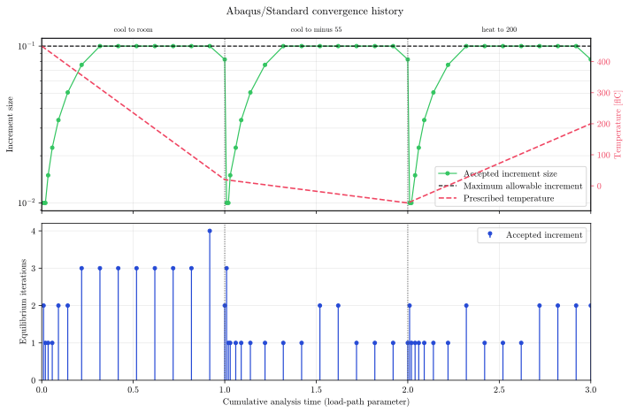
Cumulative analysis time is the appropriate horizontal coordinate because time is the load-path parameter for these rate-independent static steps. For a rejected attempt, the marker is placed at its attempted endpoint; Abaqus leaves the reported total time at the last accepted equilibrium state. The temperature curve shows the prescribed path, while the accepted and rejected markers show how much of that path the solver actually reached.
Completing all steps is necessary but not sufficient: repeated cutbacks, unusually small increments, or convergence changes caused by mesh refinement should be discussed before treating a result as credible.
3.2 Recommended follow-on studies
Before a result from this model is treated as accepted, complete the following checks:
- compare the legacy material approximation with the stress trends in Tandon et al. [1];
- demonstrate mesh and boundary-tessellation convergence for the glass principal-stress locations;
- compare the distributed support against the original pinned-face support away from the constrained region;
- verify that energy and displacement histories are smooth across all three temperature steps; and
- compare at least one discretization against a conventional Abaqus finite-element model.
The initial sensitivity matrix is:
| Case | Change from the public-data baseline | Engineering question |
|---|---|---|
| P0 | None | Recommended public-data model |
| P1 | Increase Alloy 52 modulus from 165.5 to 207 GPa | How strongly does pin stiffness change glass stress? |
| P2 | Remove or vary the 1.2 low-temperature 304L scaling | How sensitive is the cold excursion to header yielding? |
| P3 | Replace Alloy 52 linear hardening with the digitized 2007 curve | How strongly does pin hardening redistribute stress? |
| P4 | Replace the bonded interface with frictional contact | How strongly does interface behavior affect the result? |
Cases P1–P4 should be treated as separate model variants, not as uncertainty bounds on the baseline.
4 References
[1]
R. Tandon, M. K. Neilsen, T. C. Jones, and J. F. Mahoney, “Glass-to-metal (GTM) seal development using finite element analysis: Assessment of material models and design changes,” Sandia National Laboratories, 2007. Available: https://www.osti.gov/servlets/purl/1267109
[2]
R. S. Chambers, J. M. Emery, R. Tandon, B. R. Antoun, M. E. Stavig, and C. S. Newton, “Characterization & modeling of materials in glass-to-metal seals: Part i,” Sandia National Laboratories, SAND2014-0192, 2014. doi: 10.2172/1323655.
[3]
B. R. Antoun, R. S. Chambers, J. M. Emery, and R. Tandon, “Small strain plasticity behavior of 304L stainless steel in glass-to-metal seal applications,” Sandia National Laboratories, 2014. Available: https://www.osti.gov/servlets/purl/1140842
[4]
B. R. Antoun, R. S. Chambers, J. M. Emery, and A. A. Brown, “Temperature-dependent small strain plasticity behavior of 304L stainless steel,” Sandia National Laboratories, 2016. Available: https://www.osti.gov/servlets/purl/1348107
[5]
R. D. Jamison et al., “Validation assessment of a glass-to-metal seal finite-element model,” Sandia National Laboratories, SAND2017-10894, 2017. doi: 10.2172/1399340.
[6]
Fischer Connectors, “Fischer SFE 104 A056-130.” Dassault Systèmes 3D ContentCentral, Nov. 2010. Available: https://www.3dcontentcentral.com/secure/download-model.aspx?catalogid=596&id=216520
[7]
J. A. Salem and R. Tandon, “Test method variability in slow crack growth properties of sealing glasses,” International Journal of Fatigue, vol. 32, no. 3, pp. 557–564, 2010, doi: 10.1016/j.ijfatigue.2009.07.018.
[8]
G. W. Wellman, “FAILPROB—a computer program to compute the probability of failure of a brittle component,” Sandia National Laboratories, SAND2002-0409, 2002. doi: 10.2172/793332.
[9]
Richland Glass Company, Precision glass GTMS sealing component specialists. 2019. Available: https://www.richlandglass.com/wp-content/uploads/2019/04/GTMS-Lit_042519.pdf
[10]
Hamilton Precision Metals, HPM ni 52, UNS N14052. Available: https://www.hpmetals.com/products/materials/nickel-strip-foil/hpm-ni-52
[11]
Deutsche Nickel GmbH, Technical datasheet ni 52: Dilaton 51, UNS N14052. 2022. Available: https://www.deutsche-nickel.de/fileadmin/user_upload/download/Datenblaetter_englisch/Deutsche-Nickel-GmbH-Data-Sheet-Imperial-Units-Ni-52.pdf
[12]
American Iron and Steel Institute, High-temperature characteristics of stainless steels. Nickel Development Institute / Nickel Institute, 1979. Available: https://nickelinstitute.org/media/4657/ni_aisi_9004_hightemperaturecharacteristics.pdf